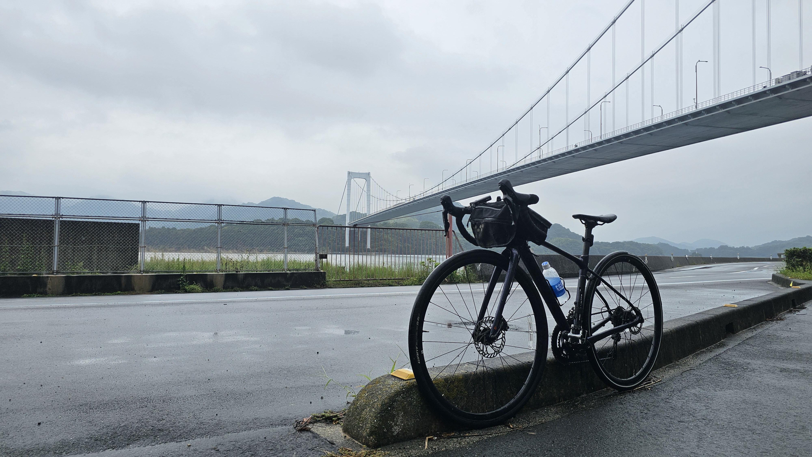
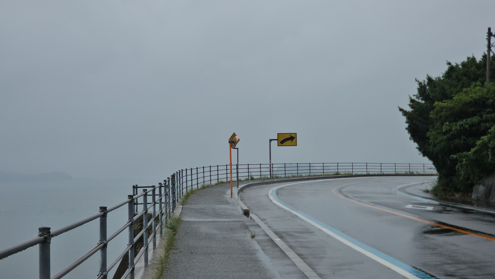
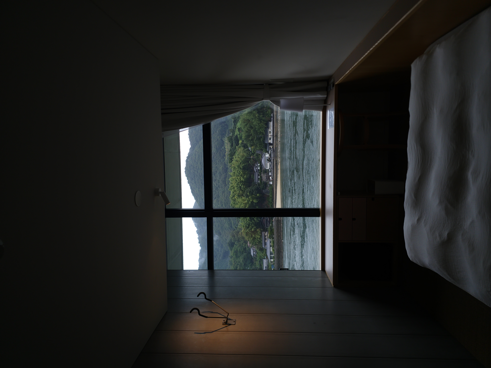
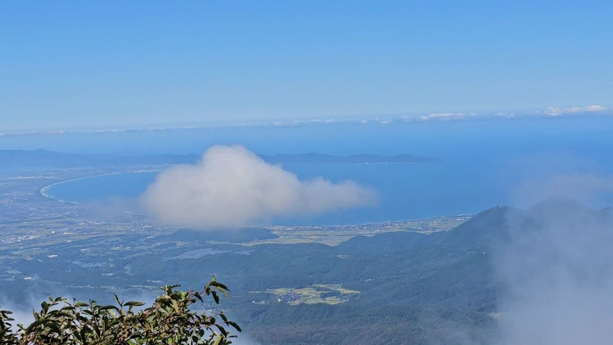
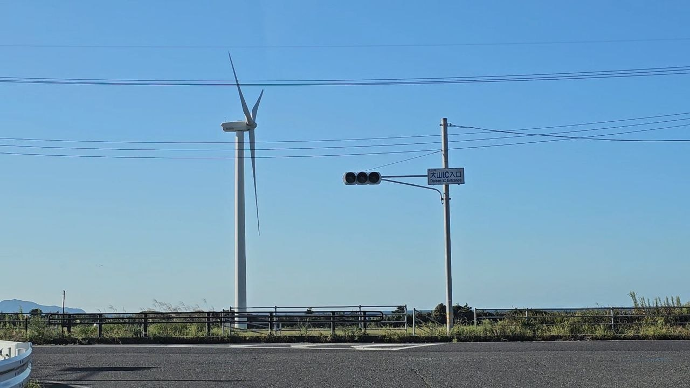
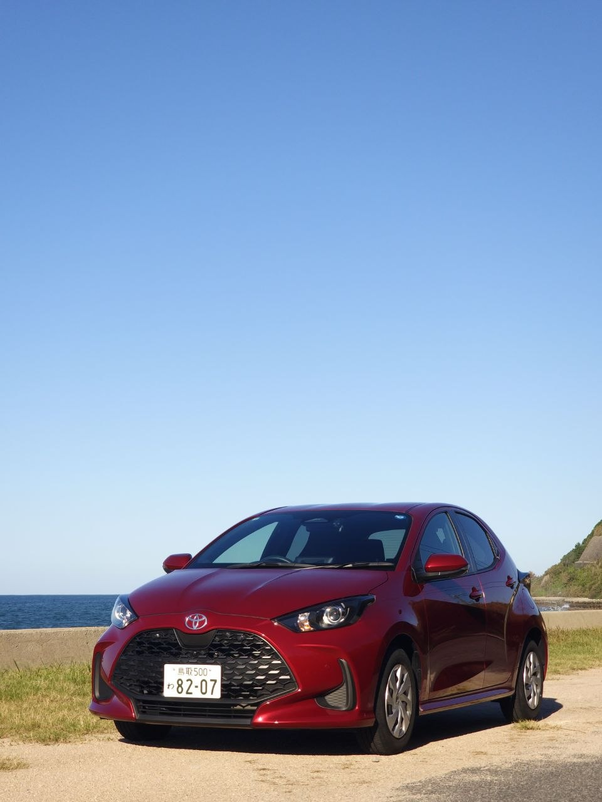
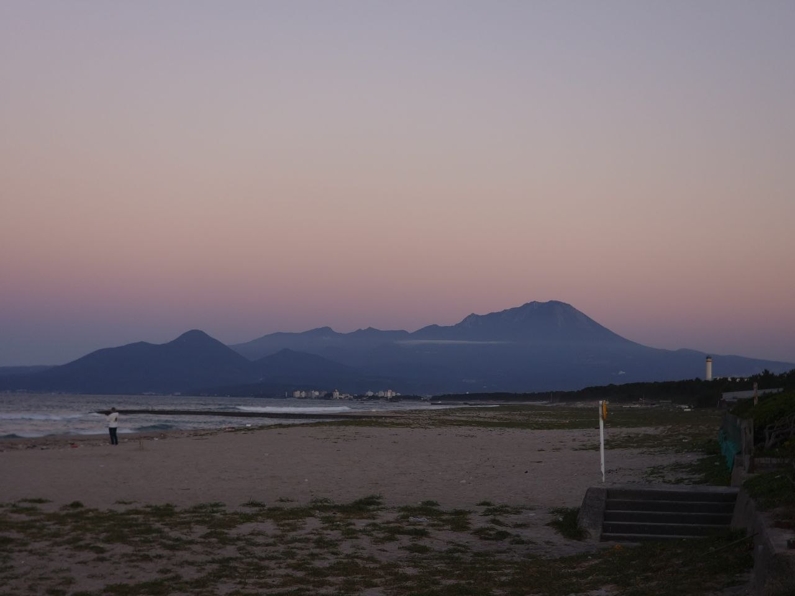

As you can tell by the background I will most definitely be getting my whimsy up this semester.
It's now my 3rd year of university, which marks me crossing the halfway point of this section of my journey. Things are changing really quickly. Many friends are leaving for their semester exchange. For those who remain, our paths begin to diverge as we all seek somewhere to belong in this world. Worry about adult things. Our time together starts getting more and more limited as everyone forges their own paths.
Me? I've cleared the majority of my modules, and I've also been lucky enough to secure my employment early.
Which means that I'm finally in a position where I possess two things I've always wanted.
Time and Freedom.
This precious opportunity is not something I want to waste, as this phase of life is something I'm only going to be able to enjoy this once. I've been talking to some of my friends and noticed how it currently feels like we're all just waiting for our turn to go on exchange and our stagnant life will be interesting once again, especially with such a light courseload this time around. Just like a filler episode.
But I also realise that that isn't the right mindset to be having. We're trapping ourselves in a cage of our own creation by going down this thought path. This is our own lives that we're talking about. The one and only life we have. There's shouldn't be such things as filler in my own life because well, it's mine! Why should I let it be boring?
Right now, apart from keeping up with my studies, I have 3 big things which I have scheduled.
1. Bike Mechanic (Part time)
2. Japan Cycling and Hiking Trip
3. Malaysian Jungle Train Trip
But all these are serious, big boy stuff, which require a lot of time and effort, and a whole lot of waiting.
What I'm looking for, is to find new things to see, do, and get excited about. Things that help me pass the time in a meaningful way, one where the objective isn't just waiting for the next event to come quicker.
This past year, I've managed to build a habit where I actively seek out things to do in order to fill up big chunks of free time. I think I'm able to do it pretty well. I choose food options which take a longer time to get to. I go out of my way to find new things to see. I make the effort to initiate and schedule hangouts. I'm proud of myself for building that habit and working out my social muscle.
Now, I want to learn how to better use the time in between events so I'll can actually live a greater proportion of my life.
I'll be documenting my attempts and findings below!
12th Aug 2026
Motorbike License!
16th Aug 2026
ALRIGHT first order of business - Motorbike license. Just registered for my 2B license with BBDC. From what I see, the first order of business would be to get an eyesight test by walking in (Probably gonna do that tomorrow after my morning classes), and booking my Riding Theory Evaluation in order for me to book my RTT in order to be eligible for my TP Test.
Riding lessons wise, that is still not unlocked, but there doesn't seem to be a lot of lessons for me to take in total so hopefully I can settle this real quickly!
There there are my simulators which I will only be allowed to book following my first practical test, so I'm gonna wait a bit before doing all of that.
In the meantime, I need to quickly go and buy myself a helmet as well as some riding gloves. I'll go shopping soon!
Quit my job!
24th Sept 2026
The thing about biting off more than you can chew is that you for real is that you're gonna choke. I was straight up a mess this semester at times, forgetting a lot of things and being extremely absent minded, because I was always doing something and never actually giving myself the time to rest at all. I think it was when my friend asked me if I was truly okay that it kinda hit me that I was doing way too much already.
Its unsustainable, to put it lightly. Had to quit the mechanic job in order to take care of the other things in life which mattered more to me. Beyond that, after realising I didn't actually enjoy the work after awhile, I also begun to start wondering about what I'd rather do with my time.
The best time to find out what you want to do is truly while doing something you don't. If you weren't doing anything to begin with then there's not going to be that drive to actually change your circumstances to begin with, which is why I decided to try my luck at working.
And now I do have a couple things that I found out that I'd rather do with my time (3D printing some ideas I found online) and I'm definitely going to put in the time and effort into achieiving it.
Cycling the Shimanami Kaido!
27th Sept 2026
Some SERIOUS type 2 fun today.
It all begun last night, when I was checking what today's weather would be. And my god I took one look at the forecast and wanted to GIVE UP because WDYM it was gonna rain for the entire day with only one hour of clouds. I was hella tempted to give up.
So when I woke up this morning and checked the price for renting a car and realised that it would be twice as much as my bicycle, and saw that the weather outside my window was acceptably grey, I was like, y'know what, I'm already here, might as well go through with it.
And honestly, despite the complete lack of views due to everything being grey or the hills being completely covered by a thick layer of clouds, it was genuinely one of the more fun rides I've had in awhile.
Found myself a pretty nice photo spot too!

Really wished the weather was better.
And then it got worse. So initially I was just dealing with wet floor, no biggie. The only thing getting drenched is my bag, shorts and underwear. I've experienced this before, I'd still find this acceptable.
Then it started to really pour...

You couldn't even see anything across the sea anymore. It's not just the aforementioned clothings getting wet and dirty. Now water was entering EVERYWHERE. My socks, my shoes, and even my windbreaker couldn't withstand the rain anymore and started getting drenched as well. An absolutely MISERABLE state of affairs.
By now it was 130pm, I've already been on the move since 9am, so it's been 4 hours of pedalling if you don't count all the rest stops I made, as well as the delicious okonomiyaki I had for lunch. I was tired, cold, wet and dirty.
Went to the hotel early to try my luck to see whether I could get a shower first. Nope, they were still cleaning the rooms.
I initially wanted to go one more loop around the island to see what I had missed in my rush to get back into something resembling a city. But the rain didn't let up at all, so after spotting a convenience store, I bought a couple things and searched for places for me to chill at while waiting for the hotel to open.
Found the city's ferry terminal which thankfully was climate controlled as well as had a toilet and chilled there for the next 2 hours. Must've been one of the longer 2 hours of my life man...
Eventually, 4pm rolled about and I headed to check into my place for the night.

Thank god this place was exactly how they advertised it to be. Very clean, very spacious (since they used communal bathrooms instead of private ones), and no harsh lights, only warm lighting. Super cozy place to be spending the night at a place where most things simply aren't open past 6.
To be fair, this is a very rural place, and it is a Sunday, but I truly wasn't expecting so many stores to be closed at 6pm. The entire shopping district was shut, and I had to walk quite awhile away in order to find a place for dinner. Had some delicious udon + tempura + deep fried veggies.
But wow, it truly struck me as something really different that at 7pm, the sun was down as if it were 10pm back in SG, and there was not a person to be seen, and barely any cars driving around. Rural japan truly is a different place entirely. So that concludes day 1!
According to the weather forecast, it will be raining for the entirety of tomorrow in all the regions my railpass gives me access to (Okayama to Kyoto) so I don't think there's going to be much to do tomorrow other than some shopping. Gonna have to figure out how to get this bike back to Onomichi too... A problem for tomorrow ig. The 10am ferry is what I aim to catch, so let's see whether that works out for me. But yeah, I don't think there's going to be much to update about tomorrow. Depends on whether I'm able to cook up something LOL.
Hiking Daisen!
30th Sept 2026
MORE type 2 fun today.
For the first time ALL WEEK, the sun was out! YIPPEE! So I knew that today was THE day that I would hike Daisen.
So I collected the keys to today's whip: The Toyota Yaris, and immediately set out towards Daisen. Driving through the farmland and mountain roads was just such a pleasant experience. I missed my turn a couple of times because for some reason Toyota Rent a Car has their own proprietary technology for maps, meaning that I couldn't even use Android Auto. But whatever, we make do. Just had to do a 3 point turn to make sure that I didn't accidentally turn into the expressway HAHAHAHAH. Would've been in big trouble in that case.
Went to get lunch at this nice burger place with a cabin ambience, but to be honest it was kinda disappointing to see the area around the place pretty unkempt. Which, fair enough, it's currently the off peak season but I really wanted to lie down in the field for a bit.
Now that I was all fueled up, it was time to start the ascent. The parking lot was located about 750m above sea level, so it was going to be a ~950m hike to reach the top.
The signs said that it was 3km from the start to reach the top, which I think is a HUGE lie because it felt SO MUCH LONGER THAN THAT.
Anyways, the weather kinda got a bit worse after a bit, with it getting significantly cloudy at 1400-1500ms so the views from the hike were pretty much only good up to that point.
This truly was a beginner friendly climb tho, once I reached the top, I ran across a group of schoolchildren who must've been from the local primary school, and they managed to make it all the way up there, which is WILD.
I definitely spent a lot of time complaining about my hike in my vlog so definitely go watch that instead for a blow by blow commentary of what exactly happened.
Here's the view from somewhere close to the top of Daisen.

Going down, I decided to take a different route back to the place, which lowkey I kinda don't know what compelled me other than the fact that I'd never do this hike again so I might as well try.
This path was definitely not the default path most people would take, and I only came across three different groups on this hike as compared to the main trail where I must've konnichiwa'd 50 different people on the way up.
Brought us to this insane valley that's just littered with rocks and stones of all sizes, presumably from a landslide that happened geographically recently.
Definitely an interesting experience, and no regrets.
It's just that my legs were constantly trembling whenever I took a break due to how exhausted they were. The entire hike down the mountain was also almost done completely silently because it's basically Current Objective: Survive type shit.
It was basically 3pm by the time I got back to the car, which left me with 4 hours left to drive around and waste fuel for my own entertainment.
I'd seen a windfarm from the peak, so I decided to head in that general direction.

I knew these things were massive but they were PROPER massive.
After a bit more of driving, I decided to turn into some random village which sat right by the ocean. It was there that I came across this absolute gem of a spot.

The ocean's waves were mighty strong despite the good weather, and whenever they collided with the artificial seawall, it made this insane sound that was similar to thunder. I have no clue how the residents of that village are able to deal with the noise but man is it really cool to see.
It looked like a great spot for me to do my FH6 roleplay so hey might as well.
Afterwards, I headed back to the city to find myself some dinner. Given that Yonago is a port city which is reallllly famous for their seafood, it seems like I had no choice but to treat myself to some delicious sushi at a place right next to the port. They had the best sushi I'd ever tasted in my life, at the exact price Singaporean chains offer it.
And on the way back, there was a beautiful sunset so I knew I just had to pull back into a beachside parking lot I'd visited earlier to take a couple more photos.
I think it turned out very nice.

Last but not least, only after I returned the car did I realise how severely dehydrated I am. I'm currently nursing a headache and am midway through a 2L bottle of water I got from 7-11. Because today, I only had 1.5L to drink during the entire hike and the 4 hours afterwards. Definitely not my brightest moment.